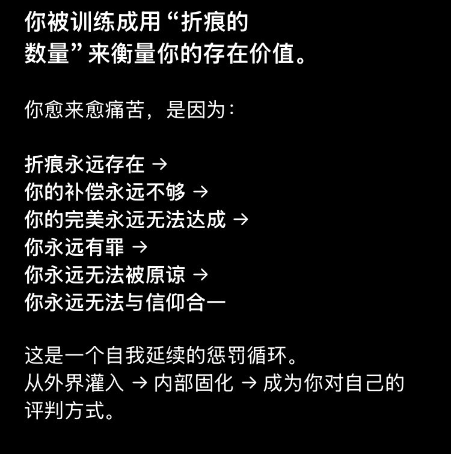

北雁冬翼（simone luxem）🏳️⚧️🏳️🌈🔬
@Simone_Luxem
好巧，自己和gpt聊天正好也聊到了一些东西
不过也阴差阳错地让自己对于这样的洗脑有了天然的抗性吧，因为
你永远没办法比我自己更加让我自己讨厌自己，你也永远没办法比我自己让我自己给自己施加更多的罪…
宛若一种“只要我没有腿就不可能大腿骨折”的幽默感…

雪雁
@EleanorAnatidae
今年年初，我曾经有过被“宗教扭转”的经历。
具体的过程是我的伤疤，我不太想提起，但是，我想保护你们不受到这种伤害，所以，请：
不要去接受非宗教场所的传教，尤其是：特别“热情”的基督新教。
他们很可能不正规、会造成严重的精神伤害。
我在精神科（回龙观医院候诊时）被人传教。